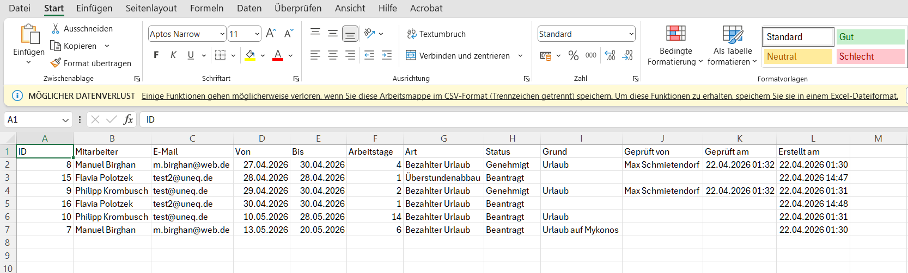

4. Features & Walkthrough
Login
Alle Nutzer melden sich per E-Mail und Passwort an. Bei falschen Zugangsdaten erscheint eine klare Fehlermeldung. Das Session-Token wird als HTTP-only Cookie gesetzt.

Bewerbungsprojekt — Technische Projektdokumentation
Bewerber: Manuel Birghan
| 1 | Projektübersicht & Vorgehensweise |
| 2 | Tech-Stack & Begründung |
| 3 | Sicherheit |
| 4 | Features & Walkthrough |
| 5 | Pflichtanforderungen — Erfüllungsstatus |
| 6 | Session-Log (Arbeitsprotokoll) |
| 7 | Demo-Zugänge |
Ziel war der Aufbau einer vollständigen Urlaubsverwaltungs-Webanwendung für UNEQ Consulting — von der Planung über die Implementierung bis zum Betrieb auf einem eigenen Server mit eigener Domain.
Das Projekt wurde in zwei Sessions innerhalb von zwei Tagen umgesetzt. Die Entwicklung erfolgte in enger Zusammenarbeit mit Claude Code (Anthropic) als KI-Coding-Assistenten: Der Bewerber gab Anforderungen und Kontext vor, Claude Code setzte technisch um und begründete Entscheidungen — ein Arbeitsstil, der den KI-gestützten Entwicklungsfluss explizit demonstriert.
Alle Entscheidungen — Stack-Wahl, Architektur, Sicherheitsmaßnahmen, UI-Design — wurden bewusst und eigenständig getroffen. Claude Code fungierte als technischer Umsetzer, nicht als Entscheider. Das vollständige Arbeitsprotokoll ist im Session-Log (Abschnitt 6) dokumentiert und im GitHub-Repository öffentlich einsehbar.
Die App ist live unter https://urlaub.birghan-dev.de erreichbar, läuft in Docker auf einem Hostinger VPS, ist per HTTPS abgesichert und vollständig auf GitHub dokumentiert.
| Schicht | Technologie | Begründung |
|---|---|---|
| Backend | FastAPI (Python 3.12) | Schnelle Entwicklung, automatische OpenAPI-Docs, starke Typsicherheit via Pydantic, async-fähig |
| Frontend | React + TypeScript + Vite + TailwindCSS | Industriestandard für SPAs, hervorragend für dashboardartige UIs, schnelles Build-System |
| Datenbank | PostgreSQL 16 | ACID-konform, zuverlässig für relationale Daten mit m:n-Beziehungen (Mitarbeiter↔Vorgesetzte), bewährt in Produktion |
| Auth | JWT + HTTP-only Cookie + bcrypt | Kein Session-State im Backend, Passwörter sicher gehasht, XSS-Schutz durch HTTP-only |
| Reverse Proxy | nginx | SSL-Terminierung, Weiterleitung auf Backend/Frontend, Rate Limiting |
| SSL | Let's Encrypt (Certbot) | Kostenlos, automatisch erneuerbar |
| Hosting | Hostinger KVM 2 VPS | Günstiger Einstieg, volle Kontrolle, Docker-fähig, Ubuntu 24.04 |
| CI/CD | GitHub Actions | Direkt integriert: lint → typecheck → build → Docker-Build bei jedem Push |
| Design | UNEQ Corporate Identity | Farben (#2B2931, #FAB784, #FBB040, #00A79D) und Schriften (Mulish, Montserrat) aus der Brand Guideline |
Folgende Punkte wurden eigenständig und ohne explizite Vorgabe berücksichtigt:
Alle Nutzer melden sich per E-Mail und Passwort an. Bei falschen Zugangsdaten erscheint eine klare Fehlermeldung. Das Session-Token wird als HTTP-only Cookie gesetzt.
Nach dem Login sieht jeder Nutzer seinen persönlichen Urlaubsstand: verbleibende Tage, genommene Tage, beantragte Tage. Der Fortschrittsbalken zeigt Genommen (grün), Beantragt (gelb) und Frei (grau) auf einen Blick.

Mitarbeitende wählen Zeitraum, Urlaubsart und optionalen Grund. Die Arbeitstage werden automatisch berechnet (Mo–Fr, NRW-Feiertage ausgeschlossen). Nur Bezahlter Urlaub zählt gegen das 30-Tage-Kontingent — Sonderurlaub, Elternzeit und Überstundenabbau werden separat erfasst.
Urlaubsarten:
| Art | Zählt gegen 30 Tage? |
|---|---|
| Bezahlter Urlaub | Ja |
| Elternzeit | Nein |
| Sonderurlaub (bezahlt) | Nein |
| Sonderurlaub (unbezahlt) | Nein |
| Überstundenabbau | Nein |

Alle eigenen Urlaubsanträge mit Status (Beantragt / Genehmigt / Abgelehnt), Urlaubsart, Zeitraum und Grund. Ausstehende Anträge können storniert werden.

Alle Nutzer sehen den Urlaubskalender des gesamten Teams. Farbkodierung:
| Farbe | Bedeutung |
|---|---|
| 🟡 Gelb | Beantragt (noch nicht genehmigt) |
| 🟢 Grün (teal) | Genehmigt |
| ↗ Diagonal grün+rot | Genehmigt, aber Überschneidung mit anderem Urlaub |
| ⬜ Grau | Wochenende oder NRW-Feiertag |
Die Zeile „Überschneidung" zeigt pro Tag die Anzahl gleichzeitig abwesender Mitarbeiter.

Vorgesetzte sehen alle ausstehenden Anträge ihrer Mitarbeitenden und können sie genehmigen oder ablehnen. Vorgesetzte, die selbst Urlaub eintragen, erhalten automatisch eine Genehmigung.

Der Admin kann Nutzer anlegen, löschen und Vorgesetzte zuweisen. Die Zuordnung Mitarbeiter↔Vorgesetzte ist m:n (ein Mitarbeiter kann mehrere Vorgesetzte haben, z. B. für Vertretungsfälle). Die Liste ist sortiert nach Rolle (Admin → Vorgesetzte → Mitarbeiter) und innerhalb der Gruppe alphabetisch.

Im Teamkalender können Vorgesetzte und Admins alle Urlaubsanträge des laufenden Jahres als CSV-Datei exportieren — direkt im Browser, ohne zusätzliche Tools.

Jeder Nutzer kann sein Passwort selbst ändern, indem er auf seinen Namen im Header klickt. Das aktuelle Passwort muss zur Bestätigung eingegeben werden.

| Anforderung | Status | Details |
|---|---|---|
| Läuft auf eigenem Server mit (Sub-)Domain | ✅ | https://urlaub.birghan-dev.de (Hostinger VPS) |
| Benutzerverwaltung mit Login | ✅ | JWT + bcrypt, drei Rollen |
| Läuft in Docker | ✅ | Dockerfile + docker-compose im Repo |
| CSV-Export der Urlaubsanträge | ✅ | Im Teamkalender per Button |
| Quellcode auf GitHub | ✅ | github.com/MrManuu/uneq-vacation-app |
| Corporate Identity berücksichtigt | ✅ | Farben, Schriften, Logo aus Brand Guideline |
Das vollständige Protokoll ist öffentlich im GitHub-Repository unter README.md einsehbar.
Die folgenden Accounts sind auf dem Live-System eingerichtet:
| Rolle | Name | Passwort | |
|---|---|---|---|
| Admin | Admin | admin@uneq.de | test!2211! |
| Vorgesetzter | Max Schmietendorf | pk@uneq.de | test!2211! |
| Vorgesetzter | Tobias Zulauf | test3@uneq.de | test!2211! |
| Mitarbeiter | Manuel Birghan | m.birghan@web.de | test!2211! |
| Mitarbeiter | Philipp Krombusch | test@uneq.de | test!2211! |
| Mitarbeiter | Flavia Polotzek | test2@uneq.de | test!2211! |
Das vollständige Repository inklusive aller Commit-Historien, CI/CD-Konfiguration und README ist öffentlich einsehbar:
github.com/MrManuu/uneq-vacation-app